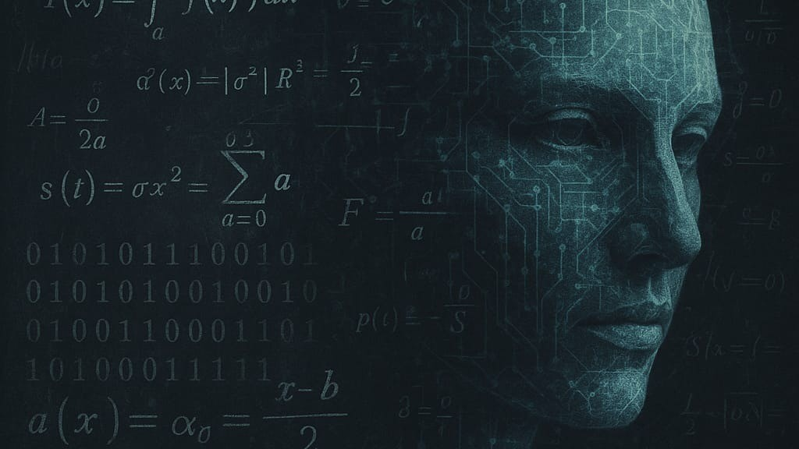

Entre Números E Máquinas - O Mistério Que Alimenta A Inteligência Artificial

Números e máquinas.
Entre números e máquinas: o mistério que alimenta a inteligência artificial
Em um mundo cada vez mais dominado por tecnologias inteligentes, é curioso --- e até perturbador --- saber que nem mesmo os maiores líderes da área compreendem totalmente como certas inteligências artificiais funcionam. Quando Sundar Pichai, CEO do Google, afirmou não entender os mecanismos exatos de tomada de decisão de alguns algoritmos, ele lançou uma provocação que vai além da ciência: será que estamos criando algo que escapa da nossa compreensão?
Por trás da sofisticação das máquinas está uma base silenciosa e poderosa: a matemática. Sem ela, não haveria algoritmos, aprendizado de máquina, reconhecimento de voz, nem mesmo essa IA que escreve este texto. Fórmulas, matrizes, derivadas e estatísticas dão vida à inteligência artificial. São os cálculos precisos, muitas vezes invisíveis, que ensinam uma máquina a reconhecer rostos, prever comportamentos e interagir com humanos.
Mas há uma ironia nisso tudo. Mesmo com todo esse arcabouço matemático, os sistemas tornaram-se tão complexos que os próprios cientistas e engenheiros não conseguem explicar, em detalhes, como cada decisão é tomada por essas \"mentes artificiais\". Isso não é incompetência, é complexidade emergente. Um fenômeno comum em sistemas altamente interconectados, onde o todo é maior --- e mais misterioso --- que a soma das partes.
Essa dualidade entre precisão matemática e imprevisibilidade tecnológica nos convida a refletir. Afinal, o mistério não está apenas na máquina, mas também na mente humana que ousou criá-la. Talvez o verdadeiro avanço não esteja apenas em construir sistemas mais poderosos, mas em desenvolver também a humildade intelectual de reconhecermos os limites da nossa própria criação.
Neste cenário, educar-se em matemática deixa de ser uma exigência escolar para tornar-se um ato de poder e consciência. Entender os fundamentos da IA é essencial não apenas para programá-la, mas para conviver com ela de forma crítica, ética e responsável.
Porque, no fim das contas, construir o futuro com inteligência artificial não é apenas uma questão de tecnologia --- é uma questão de humanidade.
REFERÊNCIAS:
GOODFELLOW, Ian; BENGIO, Yoshua; COURVILLE, Aaron. Deep Learning. Cambridge: MIT Press, 2016.
RUSSELL, Stuart; NORVIG, Peter. Inteligência Artificial. 3. ed. São Paulo: Pearson, 2013.
MITCHELL, Melanie. Artificial Intelligence: A Guide for Thinking Humans. New York: Farrar, Straus and Giroux, 2019.
PICHAI, Sundar. Entrevista ao programa 60 Minutes. CBS News, 2023. Disponível em: https://www.cbsnews.com/news/google-ceo-sundar-pichai-on-artificial-intelligence-60-minutes-2023-04-16/. Acesso em: 06 maio 2025.
SILVA, Francisco. A importância da matemática na era digital. Revista Ciência Hoje, São Paulo, v. 54, n. 3, p. 40--45, 2022.